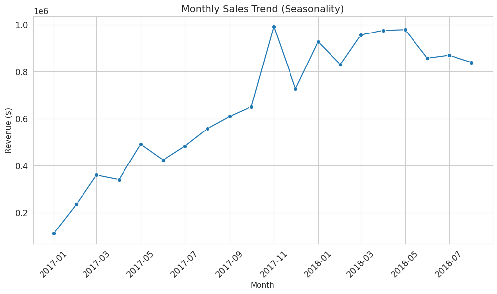
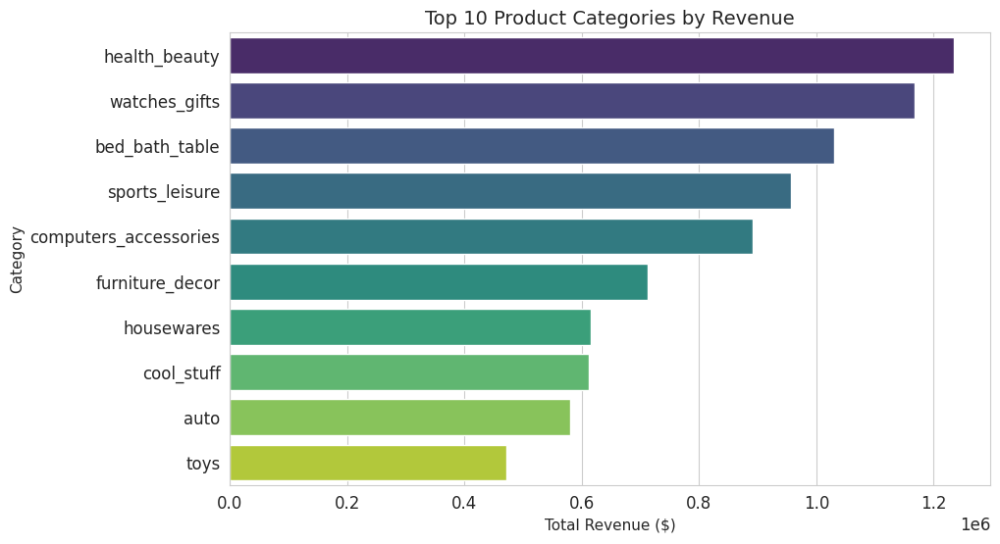

Growth: 7.5× in twenty months, then a plateau
Queries Q1 and Q3
What the numbers said
Delivered revenue rose from R$112K in January 2017 to R$839K in August 2018, 7.5×. It peaked in November 2017, the month of Black Friday, at R$991K. Through 2018 it stayed between R$0.83M and R$0.98M a month: January to August 2018 was 2.4× the same months of 2017, not 7.5×.
Health & beauty (R$1.23M), watches & gifts (R$1.17M) and bed, bath & table (R$1.03M) lead the ten biggest categories.
What it means
The first year was growth from a small base, and by 2018 the curve is flat. More revenue now has to come from existing customers ordering again, which the customer finding shows almost never happens.
Read the SQL: Q3 monthly trend
-- Q3. Monthly Sales Trend (Seasonality)
SELECT
FORMAT(purchase_date, 'yyyy-MM') AS Sales_Month,
FORMAT(SUM(gmv), 'C', 'en-US') AS Revenue
FROM dwh.vw_order_metrics
WHERE order_status = 'delivered' AND purchase_date >= '2017-01-01'
GROUP BY FORMAT(purchase_date, 'yyyy-MM')
ORDER BY Sales_Month DESC;


